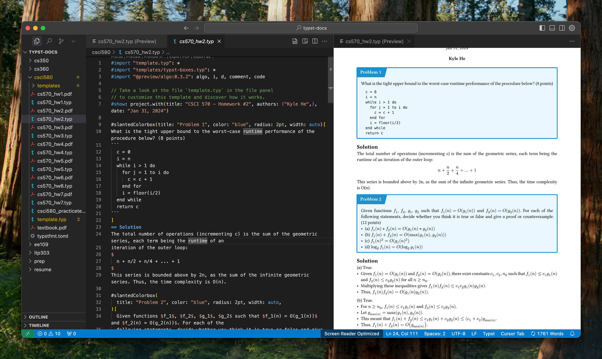
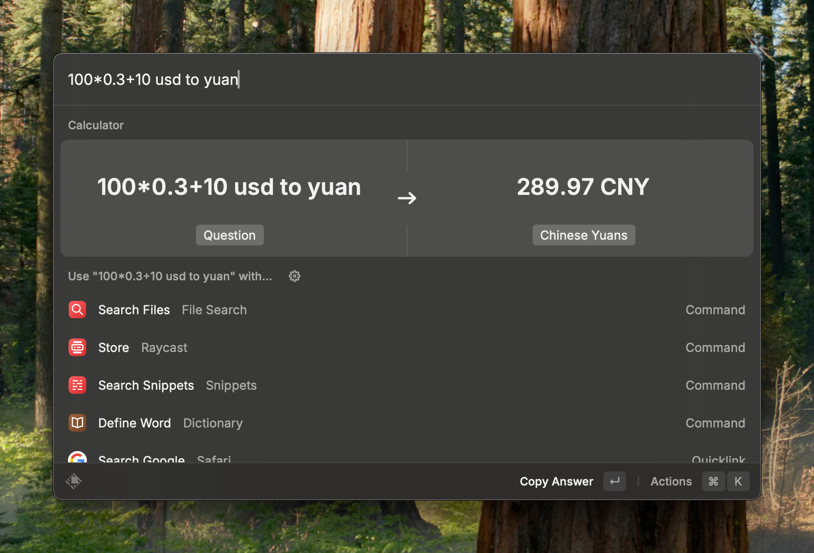
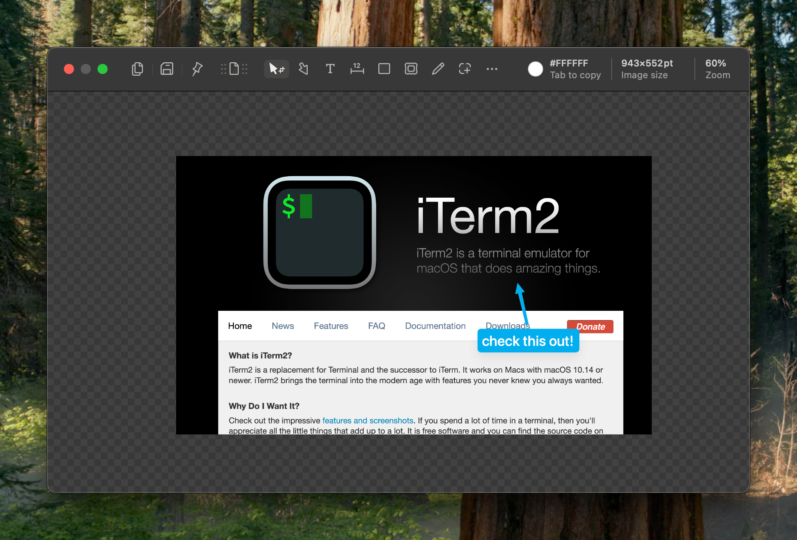

How I computer in 2025
I love learning about how other people use their devices. I’ve discovered many great applications and useful tricks by seeing how my friends computer.
So … here is how I computer in 2025.
Hardware
No glaze, but I love Apple devices and I’m so glad they exist as a company. I can totally see a timeline of personal computing where Apple was never founded, and I would’ve been really sad.
Because I like to be able to move around when I work, I don’t really like to use any external devices (i.e. external monitor, keyboard, mouse). I don’t think any other computer except a MacBook can let me do this. As such, most of my devices are made by Apple.
Anyways, here is the comprehensive list of all the devices that I own and use.
Laptop
My daily driver is the 2025 13-inch MacBook Air (M4, 16GB RAM, 512GB SSD, Sky Blue).
Last week, I recently upgraded from my trusty old MacBook Air from 2020 (M1, 8GB RAM, 512GB SSD). It still works great though, so I handed it off to the parents.
Phone
I use the iPhone 15 Pro (128GB, Blue Titanium). For the longest time, I was rocking the iPhone SE that had like a 2-hour battery life, 64GB of storage, so this was a very welcome upgrade. Though, unfortunately this also makes it so much easier to spend an exorbitant amount of time on it, so I’ve been considering getting a dumb phone and swapping it in from time to time.
Tablet
I use a 11-inch iPad Pro (Wi-Fi, 128GB, Space Gray). I bought this in my first semester of college in 2022, and I used it a ton in my freshman and sophomore year, mostly to take notes and do homework. Recently though, I’ve been preferring physical paper a lot more, so my iPad has not really been used much these past few months.
Server
This doesn’t really go under hardware, but I’ll just put it in this section anyway. I have a VPS on DigitalOcean that I pay for with credits from the Github Student Developer pack. I’ve been planning to host more projects on it, but haven’t gotten around to building anything particularly interesting.
Currently, I just use it to host share.kylehe.com, which is a super simple file hosting software that I use for personal use, when I need to quickly send files from one device to another.
It’s lowkey super jank though, and I only really use this when I have to send a PDF to a friend or I need to send something to a random device like a library computer.
Software
Web Browser
I’ve been using Arc for around a year now, and I have a love-hate relationship with it. On one hand, it makes managing tabs much easier, and feels a lot more responsive than Chrome. On the other hand, it’s been getting a lot buggier—some tabs won’t close, the new tab prompt would autocomplete for me instead of searching, things like that. I think this is because the team at The Browser Company are planning on EOL’ing it, instead making an AI-first browser from the ground up instead. I’m not sure how I feel about that, and it makes me a bit sad.
Development
I use Cursor as my main IDE, and I like it a lot so far! I rarely pay for software, so it’s pretty high praise that they were able to convince me to shell out $20/month. I actually had it installed back in 2023 when it first came out, but stopped using it because it didn’t seem particularly helpful or useful. However, over the past year, they have really stepped up their game: Tab and Agent actually work!
I use iTerm2 as my terminal emulator.
Productivity
I used to use Notion pretty heavily, followed by Obsidian. While I liked both pieces of software, I realized that I don’t really be taking notes enough to warrant using a PKM—most of my classes don’t really need notes, and the ones that do are better suited for handwritten notes. Maybe when I start working full time and start having regular work meetings, I might pick up Obsidian again.
So now, I’ve mostly just been rawdogging Apple Notes for reminders + pen and paper.

I write documents using Typst and the Tinymist extension has been one of the best writing experiences ever.
Misc
Here are some pieces of software that I like, in no particular order.

I really really like Raycast. It supports so many features out of the box, and the built-in calculator app is amazingly good. I should honestly use it for more utilities, but I haven’t gotten around to thinking about it too much. But for the stuff I use it for (opening apps, quick calculations, clipboard history, snippets, and resizing windows), it has been Pretty Awesome.

I use Shottr for screenshots. I like that it allows me to quickly OCR text from the screen, and mark up screenshots.
I use Zed as a simple text editor to quickly manipulate and write scripts.
I use IINA to play video files. I use it because it handles a larger variety of video files (ex. MKV files).
OS / Package Management
Recently, I started using Nix Darwin to manage my installations, and it seems pretty nice so far. On my old computer, one of my biggest gripes was having tons of random installs that I had installed over the years, and I didn’t really have a clear picture of what was exactly installed on my computer, but Nix helps a lot in fixing that.
I also started versioning my dotfiles and managing the symlinks using stow and it’s been pretty nice so far.
Conclusion
My setup is pretty basic, but it works for me. One of my biggest annoyances on my old device was dealing with multiple different installations of everything, having to wade through them whenever I ran into version issues. Using software like Nix and being more careful about my setup this time has made me feel a lot more confident about my system.